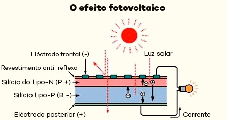
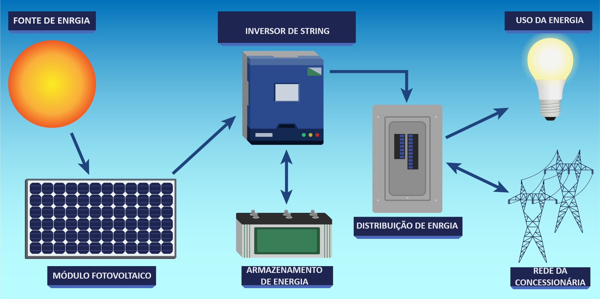
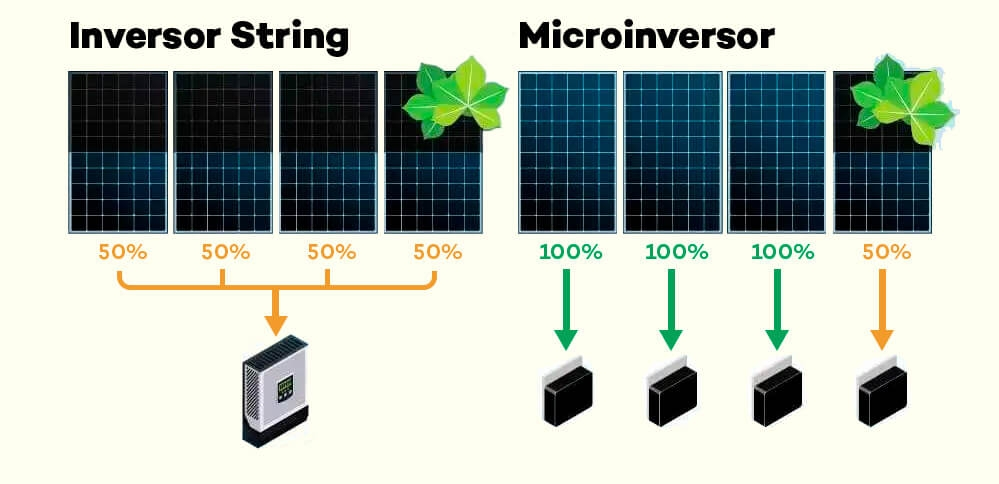
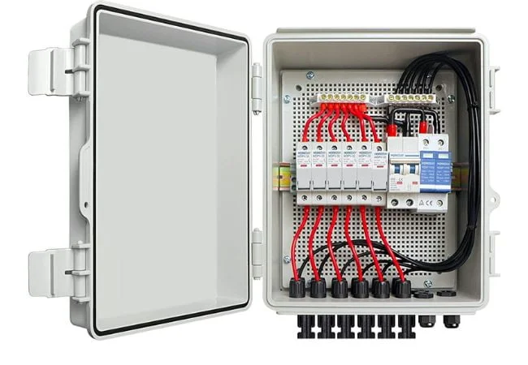
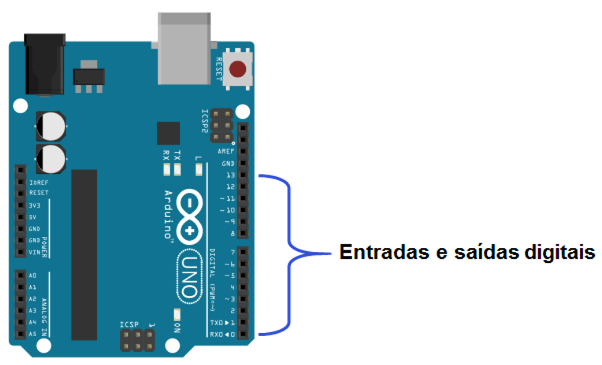
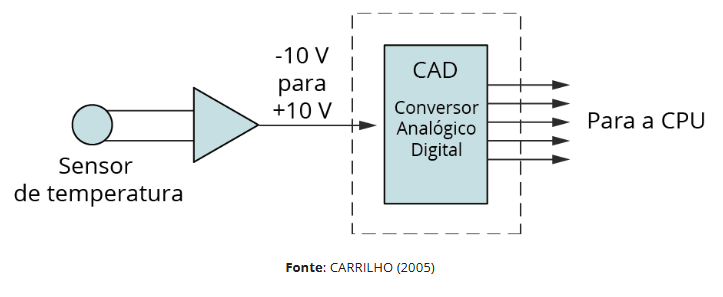
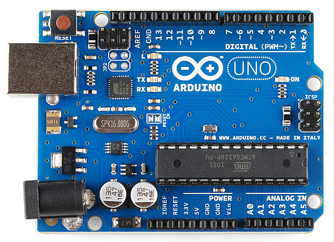
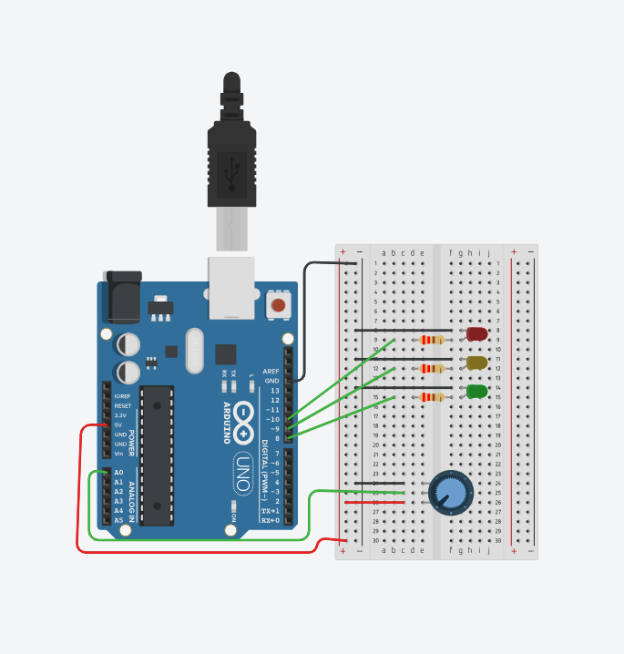
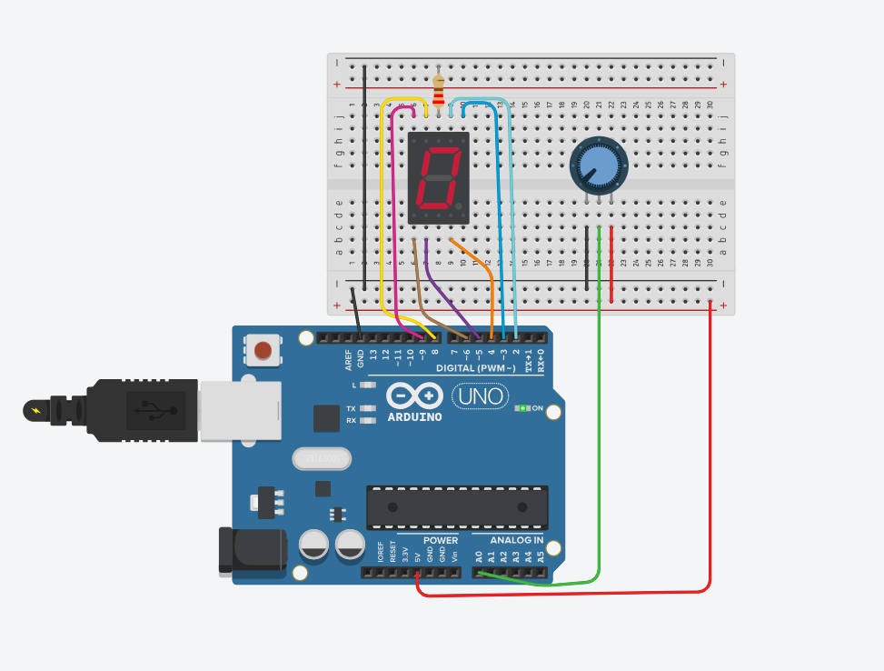

SISTEMAS FOTOVOLTAICOS
Introdução á energia solar, placas solares, efeitos fotovoltaicos etc...
No cenário mundial, a energia solar fotovoltaica vem ganhando destaque como uma das principais fontes de energia renovável e sustentável.
A conversão direta da luz solar em energia elétrica por meio de células fotovoltaicas é uma solução eficaz e sustentável,
especialmente com o crescimento da procura por opções limpas para a produção de eletricidade.
Essa tecnologia emprega o efeito fotovoltaico para converter a radiação solar em energia elétrica, auxiliando na diminuição da emissão de gases poluentes e na diversificação da matriz energética.
No Brasil, a energia solar fotovoltaica tem um grande potencial de utilização, graças à sua posição geográfica privilegiada.
Isso inclui cidades como Tijucas, em Santa Catarina, onde a incidência solar possibilita a criação de sistemas eficazes e economicamente sustentáveis.
Este estudo possui o objetivo apresentar os princípios do efeito fotovoltaico, analisar os principais componentes dos sistemas solares, comparar produtos de diferentes fabricantes,
além de avaliar o potencial de radiação solar na região de estudo, ressaltando a importância da energia solar no contexto energético atual.

EFEITO FOTOVOLTAICO E FUNDAMENTO FÍSICO
Conceito e explicação...
O efeito fotovoltaico é o fenômeno físico que permite a transformação direta da luz solar em energia elétrica,
constituindo a base para o funcionamento das células fotovoltaicas empregadas em sistemas solares.
Esse fenômeno, identificado no século XIX, refere-se à produção de uma corrente elétrica quando certos materiais semicondutores são submetidos à radiação luminosa.
No fundamento físico, quando a luz solar atinge a célula, os fótons da radiação solar penetram no material e transferem energia para os elétrons do semicondutor.
Para que a corrente elétrica seja gerada, a energia do fóton precisa ser igual ou superior à energia de gap (banda proibida) do semicondutor.

CATEGORIAS DE CÉLULAS FOTOVOLTAICAS
Conceitos e tipos de células...
As tecnologias de células solares mais importantes podem ser categorizadas de acordo com o tipo de silício e o método de produção:
Células Monocristalinas: Fabricadas a partir de um único cristal de silício, apresentam alta eficiência
(normalmente entre 18% e 22%) graças à uniformidade da estrutura cristalina, que favorece o fluxo dos elétrons.
São mais caras e possuem uma cor escura uniforme.
Células Policristalinas: compostas por vários cristais de silício fundido, têm uma eficiência um pouco menor
(cerca de 15% a 18%) devido à maior quantidade de fronteiras entre os cristais,
que podem obstruir o fluxo dos elétrons.
Custam menos e apresentam uma coloração azulada e textura granulada.
Células de Filme Fino: Empregam materiais como telureto de cádmio (CdTe) ou silício amorfo (a-Si).
São flexíveis e apresentam eficiência reduzida (de 10% a 12%), porém com menor custo de produção e melhor desempenho em condições de baixa luminosidade.
USOS DO EFEITO FOTOVOLTAICO
O efeito fotovoltaico é utilizado em painéis solares para produzir eletricidade em diferentes escalas,
desde pequenos aparelhos portáteis até grandes usinas solares,
auxiliando na matriz energética sustentável e diminuindo as emissões de gases de efeito estufa.
COMPONENTES DO SISTEMA FOTOVOLTAICO
Estrutura de Anexação
A estrutura de fixação serve para manter os painéis solares em uma posição segura e no ângulo correto para otimizar a captação da radiação solar durante todo o dia.
Ela pode ser instalada em telhados (estruturas coplanares), no solo (estruturas de solo fixas ou móveis) ou em coberturas de estacionamento (carports).
Inversores e microinversores
Os inversores são aparelhos eletrônicos responsáveis por transformar a corrente contínua (CC) produzida pelos painéis em corrente alternada (CA),
que é compatível tanto com a rede elétrica quanto com os dispositivos elétricos.
Inversores string (ou centralizados): Um único inversor ligado a diversas “strings” (sequências) de painéis.
São mais frequentes em sistemas residenciais e comerciais de pequeno a médio porte.
Microinversores: Instalados de forma individual em cada painel solar.
Além de permitir o monitoramento individualizado, possibilitam melhor desempenho em casos de sombreamento parcial ou orientações diferentes.
Cabos e conectores
Cabos e conectores são fundamentais para a transmissão segura e eficaz da energia elétrica produzida pelos painéis solares,
primeiro até o inversor e, em seguida, ao sistema elétrico do edifício.
A performance e a segurança do sistema fotovoltaico são diretamente afetadas pela qualidade e pela especificação adequada desses componentes.
Cabos solares: devem ser adequados para aplicações fotovoltaicas,
apresentando dupla isolação, proteção contra raios UV e resistência a altas temperaturas (por exemplo, cabos do tipo PV1-F).
Conectores MC4: utilizados para conectar os cabos aos módulos e entre eles de forma segura e com vedação apropriada.
ENTRADA DIGITAL

Binário, fisico e volts
Uma entrada digital é um tipo de sinal em sistemas eletrônicos e de computação que opera estritamente com base em dois estados distintos: ligado ou desligado. Isso contrasta com as entradas analógicas, que podem assumir uma faixa contínua de valores.
Binário (Lógica) Conceito: A natureza fundamental de uma entrada digital é binária (base 2). Ela só pode representar dois valores lógicos: 0 (zero) ou 1 (um). Função: Esses dois estados lógicos são a base de toda a tecnologia digital, usados para representar informações simples como "sim/não", "aberto/fechado" ou "verdadeiro/falso".
Físico (Implementação) Conceito: Fisicamente, o estado binário é representado por uma condição elétrica ou física tangível. Exemplos: Um botão pressionado ou solto. Um sensor de presença que detecta ou não a presença de um objeto. Um interruptor que está fechado (ligado) ou aberto (desligado).
Físico (Implementação) Conceito: Fisicamente, o estado binário é representado por uma condição elétrica ou física tangível. Exemplos: Um botão pressionado ou solto. Um sensor de presença que detecta ou não a presença de um objeto. Um interruptor que está fechado (ligado) ou aberto (desligado).
SAIDA DIGITAL
Binário, fisico e volts
Uma saída digital é um tipo de sinal eletrônico que opera em apenas dois estados distintos, representando informações de forma binária: ligado ou desligado (sim ou não, 1 ou 0).
Binário: A base da comunicação digital é o sistema binário, que utiliza apenas dois dígitos: 0 e 1. Cada dígito é chamado de "bit". Em uma saída digital, esses dois estados lógicos ("0" ou "1") são usados para codificar e transmitir informações ou controlar dispositivos.
Físico: Fisicamente, esses estados binários são representados por níveis de tensão elétrica discretos e bem definidos. A saída digital atua como um interruptor eletrônico, chaveando a presença ou ausência de tensão em um circuito elétrico.
Volts: Os níveis de tensão (Volts) definem o que é considerado "0" e "1". O estado lógico "0" (ou BAIXO) geralmente corresponde a um nível de tensão próximo de 0 Volts (GND ou terra). O estado lógico "1" (ou ALTO) corresponde a um valor de tensão específico, que varia dependendo da tecnologia do circuito (por exemplo, 5V, 3.3V, 12V, etc.).
ENTRADA ANALÓGICA
Binário, fisico e volts
Uma entrada analógica é um tipo de sinal que pode assumir qualquer valor dentro de um intervalo contínuo, diferenciando-se dos sinais digitais ou binários, que só podem ser "ligado" (1) ou "desligado" (0) [1].
Binário: A principal diferença é que um sinal analógico tem uma faixa infinita ou quase infinita de valores (como 1.1V, 1.11V, 1.111V, etc.), enquanto um sinal binário (ou digital) é restrito a apenas dois estados discretos: 0 ou 1, que correspondem a "sem tensão" ou "tensão total" [1].
Físico: A entrada analógica é a representação eletrônica de um fenômeno físico do mundo real. Sensores são usados para medir grandezas como temperatura, pressão, luz ou som e convertê-las em um sinal elétrico analógico [1].
Volts: O sinal analógico é tipicamente transmitido na forma de tensão (volts) ou corrente. A variação na grandeza física medida (por exemplo, a temperatura aumentando) é diretamente proporcional à variação na tensão do sinal (por exemplo, a tensão aumentando de 1V para 4V) [1].
SAIDA ANALÓGICA
Binário, fisico e volts
Uma saída analógica é um tipo de sinal contínuo que pode assumir qualquer valor dentro de uma faixa específica, diferente de um sinal digital (binário) que tem apenas valores discretos (geralmente ligado/desligado ou 0/1) [1].
Binário: Um sistema binário é digital. Os sinais binários são usados em saídas digitais, que estão em um dos dois estados (alto/baixo, 0V/5V, etc.). A saída analógica, por outro lado, varia continuamente.
Físico: Uma saída analógica é uma manifestação física de um sinal elétrico. A variação nos volts (tensão) ou na corrente é uma propriedade física mensurável que pode ser usada para controlar outros dispositivos, como ajustar a velocidade de um motor ou a intensidade de uma luz [1].
Volts (Tensão): A forma mais comum de saída analógica física é a variação de tensão em volts. Por exemplo, uma saída analógica pode variar de 0 a 10 volts. Um valor de 5V representa um ponto médio, enquanto 2V representa um ponto baixo, e assim por diante. Essa tensão variável é o que transmite a informação continuamente.
O QUE É UM ARDUINO?
Explicação
O Arduino é umaplataforma de prototipagem open source de computação física. Mas você deve estar se perguntando: o que é prototipagem? Prototipagem é o processo de criação e fabricação de protótipos. Ela tem o objetivo de testar o produto com um baixo custo e assim detectar as possíveis falhas e as qualidades do projeto. A prototipagem é um processo que geralmente dura até a conclusão do projeto, ou seja, quando o produto final já está pronto. O Arduino é o que chamamos de plataforma de computação física embarcada, ou seja, um pequeno computador dedicado e independente, que geralmente é programado para realizar uma determinada função. É um sistema que pode interagir com o ambiente, por meio de hardware e software, e pode ser conectado a um computador ou uma rede para o recebimento ou envio de dados. Com isso, o Arduino foi construído para ser utilizado por qualquer pessoa, para colocar suas ideias em ação. Por ser uma plataforma de código aberto, milhares de pessoas fazem suas modificações e lançam suas próprias versões dessa placa, o que gera uma grande diversidade de Arduinos no mercado, com diversos preços e aplicações mais específicas. Existem também várias comunidades de Arduino, onde as pessoas se ajudam, disponibilizam códigos de programação e até mesmo tutoriais, que vão do básico até o avançado. Além disso, elas também tiram dúvidas e ajudam no desenvolvimento de software.
O QUE É UM MICROCONTROLADOR?
Explicação, função...
Um microcontrolador é um computador em um único chip, projetado para controlar tarefas específicas em sistemas embarcados, sem a necessidade de um sistema operacional complexo. Ele integra um processador (CPU), memória (RAM e ROM) e periféricos de entrada/saída (E/S), como temporizadores e conversores analógico-digitais (ADC), tudo em um único circuito integrado (CI).
Componentes integrados: Possui todas as peças essenciais de um computador em um único chip: o núcleo do processador (que executa as instruções), memória (para armazenar programas e dados temporários) e portas de entrada/saída (para interagir com o mundo externo). Função: É programado para realizar uma sequência de tarefas específicas em um dispositivo. Por exemplo, em um controle remoto, ele recebe o sinal do botão pressionado e envia o comando correto para a TV. Aplicações comuns: São encontrados em uma vasta gama de dispositivos, como eletrodomésticos, controles remotos, brinquedos, sistemas de segurança, carros e equipamentos industriais. Vantagens: São de baixo custo, consomem pouca energia e são compactos, o que os torna ideais para aplicações que exigem um controle preciso e eficiente em um espaço pequeno. Diferença para microprocessador: Ao contrário de um microprocessador que é apenas a unidade central de processamento, o microcontrolador é um sistema completo "tudo em um" que inclui memória e periféricos integrados.
MICROCONTROLADOR DO ARDUINO

Modelo e fabricante
Arduino Uno (R3)
Microcontrolador: ATmega328P
Fabricante: Microchip Technology (antiga Atmel)
Arduino Mega 2560
Microcontrolador: ATmega2560
Fabricante: Microchip Technology
Arduino Nano
Microcontrolador: ATmega328P
Fabricante: Microchip Technology
Arduino Leonardo
Microcontrolador: ATmega32U4
Fabricante: Microchip Technology
Arduino Micro
Microcontrolador: ATmega32U4
Fabricante: Microchip Technology
Arduino Due
Microcontrolador: ATSAM3X8E (ARM Cortex-M3, 32 bits)
Fabricante: Microchip Technology
Arduino zero
Microcontrolador: ATSAMD21G18 (ARM Cortex-M0+, 32 bits)
Fabricante: Microchip Technology
Arduino Uno R4 (2023)
Há duas versões:
R4 Minima - Microcontrolador: Renesas RA4M1
R4 WiFi - Microcontrolador: Renesas RA4M1 + ESP32-S3
Fabricantes: Renesas (MCU principal) e Espressif (WiFi/BLE)
LINGUAGEM DE PROGRAMAÇÃO PRINCIPAL DO ARDUINO
C++
Na prática, o Arduino usa C++ com uma camada simplificada de funções próprias (a Arduino API), que facilita programar sem lidar com detalhes complexos do hardware Como funciona: Você escreve o código em um estilo simplificado (funções como pinMode(), digitalWrite(), delay(), etc.). O Arduino IDE converte esse código em C++, adiciona cabeçalhos, e compila usando avr-gcc (para Arduinos AVR) ou outras toolchains (ARM, Renesas, ESP32, etc.). O resultado final é carregado no microcontrolador.
ONDE O ARDUINO É PROGRAMADO?
IDE
Arduino IDE (oficial) É o ambiente mais usado. Versões principais: Arduino IDE 1.x Versão clássica Interface simples Muito utilizado em tutoriais antigos Arduino IDE 2.x (atual) Versão moderna Auto-complete Depuração para algumas placas Baseado em Electron Disponível para Windows, macOS e Linux.
VALOR EM VOLTS DA ENTRADA ANALÓGICA NO ARDUINO E RESOLUÇÃO EM BITS
Valor de entrada depende do modelo?
O valor de entrada analógica e a resolução dependem do modelo de Arduino, mas o padrão mais usado (Arduino Uno) é bem conhecido. Tensão máxima de entrada analógica: 0 a 5 volts (Níveis acima de 5V podem danificar a placa) 🔹 Resolução do ADC: 10 bits Conversor A/D de 10 bits → 0 a 1023 Passo de resolução: 5v / 1024 ≈ 4,88 mV por unidade
VALOR DA ENTRADA DIGITAL EM VOLTS NO ARDUINO
O valor depende da placa?
O valor da entrada digital no Arduino depende do modelo da placa, mas a maioria usa dois níveis: Arduino UNO / Nano / Mega (família AVR - 5 V) Tensão lógica: 5 V Reconhecimento de níveis digitais: 0 (LOW): 0 a 1,5 V 1 (HIGH): 3,0 V a 5 V Entre 1,5 V e 3,0 V é uma região “indefinida” e pode causar comportamento imprevisível.
Outros modelos (comparação) Arduino Due / Zero / MKR / Portenta (3,3 V) Tensão lógica: 3,3 V Reconhecimento típico: LOW: 0 a ~1,0 V HIGH: ~2,0 V a 3,3 V Atenção: Não colocar 5 V em entradas digitais de placas de 3,3 V — isso pode queimá-las.
VALOR DA SAIDA DIGITAL EM VOLTS NO ARDUINO
O valor depende da placa e da tensão lógica?
Arduino UNO / Nano / Mega (família AVR - 5 V) Quando você usa digitalWrite(pin, HIGH); Saída HIGH: aproximadamente 5 V (geralmente entre 4,8 V e 5,0 V, dependendo da corrente) Quando usa digitalWrite(pin, LOW); Saída LOW: aproximadamente 0 V (geralmente entre 0 e 0,2 V, dependendo da carga) Corrente máxima recomendada: 20 mA por pino (máx. absoluto 40 mA, mas não recomendado) 200 mA máximo total do chip (soma de todos os pinos)
Outras placas (comparação) Arduino Due / Zero / MKR / Portenta (3,3 V) HIGH: ~3,3 V LOW: ~0 V São placas sensíveis — não aplique 5 V nos pinos digitais.
O QUE É UM MULTIMETRO?
Explicação
Um multímetro é um instrumento de medição elétrica usado para testar e diagnosticar circuitos. Ele combina vários medidores em um só aparelho, por isso o nome multi-metro. O que um multímetro faz? Ele mede principalmente: 1. Tensão (Volts) DC (corrente contínua) → baterias, fontes, Arduino AC (corrente alternada) → tomada, rede elétrica 2. Corrente (Amperes) Mede o fluxo de elétrons no circuito. 3. Resistência (Ohms) Mede resistência de resistores, sensores, fios etc.
Funções adicionais comuns Dependendo do modelo, também pode medir: Continuidade (bip) Diodos Capacitância Frequência Temperatura Teste de transistores
Tipos de multímetro Multímetro digital (mais comum) Tem uma tela LCD Fácil de usar Mais preciso Multímetro analógico Ponteiro e escala impressa Útil para observar variações rápidas
Para que serve no dia a dia? Com um multímetro você pode: Ver se uma bateria está carregada Medir a tensão em um Arduino Conferir se há curto-circuito Identificar fios positivos e negativos Testar sensores, cabos, tomadas, LEDs, resistores…
O QUE É ESCALA DE MEDIÇÃO?
Explicação
A escala de medição é o intervalo de valores que um instrumento (como um multímetro) consegue medir em uma determinada configuração. Ela define o “tamanho” da medida máxima que você pode fazer naquela função. Explicação simples: Quando você seleciona uma escala no multímetro, você diz: “Quero medir até X volts / ohms / amperes.” Exemplo: Escala 20 V → mede de 0 a 20 volts Escala 200 Ω → mede de 0 a 200 ohms Escala 10 A → mede até 10 amperes
Por que a escala é importante? Para não danificar o multímetro Se a escala for muito baixa e a tensão for maior que ela, o aparelho pode travar, dar erro ou queimar. Para ter precisão Quanto mais adequada a escala ao valor real, maior a precisão. Para ler corretamente Uma escala mal escolhida pode mostrar apenas “1”, “OL”, “OVERLOAD” ou nada útil.
Tipos de escala dependendo da função Escala de tensão (V) 200 mV 2 V 20 V 200 V 600 V
Escala de resistência (Ω) 200 Ω 2 kΩ 20 kΩ 200 kΩ 2 MΩ
Escala de corrente (A, mA) 200 mA 10 A → Cada uma com porta e fusível diferente
LEI DO MULTIMETRO PARA MEDIDAS
Lei de ohm
Lei de Ohm (V = R × I) É a lei mais importante usada internamente nas medições de um multímetro. Ela relaciona: V → tensão I → corrente R → resistência Como o multímetro usa a Lei de Ohm? Para medir resistência (R), ele aplica uma pequena corrente conhecida em um componente e mede a tensão resultante. Depois calcula: R= V / I Para medir corrente, ele usa um resistor shunt interno (resistência conhecida) e mede a queda de tensão sobre ele: 𝐼 = 𝑉 / 𝑅shunt
Leis de Kirchhoff Usadas indiretamente para interpretar sinais no circuito: Lei das Tensões de Kirchhoff (LKT) A soma das tensões em um laço fechado = 0. Lei das Correntes de Kirchhoff (LKC) A soma das correntes que entram = a soma das que saem. O multímetro “segue” essas leis ao medir em série (corrente) ou em paralelo (tensão).
Princípios eletrônicos e circuitos internos Além das leis físicas, o multímetro usa: Divisores de tensão → permitem medir tensões maiores Resistores shunt → para medir corrente Retificadores e filtros → para medir AC Conversor ADC (Analógico-Digital) → faz a leitura final Mas tudo isso ainda se baseia em Ohm e Kirchhoff
TESTE DE CONTINUIDADE
O que é e pra que serve?
O teste de continuidade é uma função do multímetro usada para verificar se duas partes de um circuito estão eletricamente conectadas, ou seja, se a passagem de corrente entre elas é possível.
Como funciona? O multímetro envia uma pequena corrente entre as pontas e verifica se ela consegue passar. Se houver caminho (continuidade) → o multímetro apita (bip) e mostra baixa resistência. Se não houver caminho → não apita e mostra resistência muito alta ou "OL". O bip facilita o teste quando você não pode olhar para o visor. O multímetro envia uma pequena corrente entre as pontas e verifica se ela consegue passar. Se houver caminho (continuidade) → o multímetro apita (bip) e mostra baixa resistência. Se não houver caminho → não apita e mostra resistência muito alta ou "OL". O bip facilita o teste quando você não pode olhar para o visor.
Para que serve o teste de continuidade? Ele é usado para checar: 🔹 1. Se um fio ou cabo está funcionando Ver se não está partido por dentro Testar cabos USB, extensões, fios automotivos etc. 🔹 2. Se há ligação elétrica entre dois pontos Trilhas de placa (PCB) Conectores Terminais de componentes 🔹 3. Identificar curtos-circuitos Entre pinos que não deveriam estar conectados Entre trilhas da placa após soldar 🔹 4. Verificar fusíveis um fusível com continuidade → bom Sem continuidade → queimado
Quando NÃO usar o teste de continuidade Nunca use em circuitos energizados (ligados). Evite usar em placas com componentes sensíveis (o teste usa corrente pequena, mas não 100% segura para tudo).
MEDIÇÃO DE RESISTENCIA NO RESISTOR
Como funciona?
A medição de resistência em um resistor usando um multímetro é simples, mas requer alguns cuidados para obter um resultado correto.
Aqui está o passo a passo detalhado:
Preparação
Desligue o circuito: Nunca meça resistência com o resistor conectado a um circuito energizado,
pois isso pode danificar o multímetro.
Escolha a escala adequada: Se o multímetro for manual, selecione uma escala maior que o valor esperado do resistor.
Se for automático (auto-range), ele ajusta sozinho.
Conexão do multímetro
Coloque o multímetro na função Ω (ohms / resistência).
Conecte as pontas de prova nos terminais do resistor:
Não importa a polaridade, pois resistência não tem sentido de corrente definido.
Leitura
O multímetro aplica uma pequena corrente ao resistor internamente.
Mede a queda de tensão que ocorre e calcula a resistência usando a Lei de Ohm.
Interpretação
Valor correto: próximo ao valor nominal indicado pelas cores do resistor.
Valor muito alto ou infinito (OL): resistor aberto (quebrado).
Valor muito baixo: curto ou resistor danificado.
Dicas
Se o resistor estiver no circuito, pode haver caminhos paralelos que alteram a leitura.
Limpe bem os terminais se houver sujeira ou oxidação.
MEDIÇÃO DE TENSÃO NO CIRCUITO COM RESISTOR E LED
Passos
1. Entendendo o circuito Um circuito básico com LED normalmente é assim: Fonte → Resistor → LED → Retorno à fonte O resistor limita a corrente. O LED tem uma queda de tensão típica: vermelho: ~1,8-2,2 V azul/branco: ~3,0-3,3 V
2. Como medir a tensão com o multímetro A. Medir a tensão no LED Coloque o multímetro em DCV (V⎓), escala maior que a tensão da fonte. Toque: Ponta vermelha → no ânodo (lado positivo do LED) Ponta preta → no cátodo (lado negativo) Você deve ler a queda de tensão do LED (ex: 2 V para vermelho).
B. Medir a tensão no resistor Toque: Ponta vermelha → uma extremidade do resistor Ponta preta → a outra extremidade A leitura será a tensão que o resistor está “consumindo”. Exemplo: Em um circuito de 9 V LED = 2 V R = 7 V (pois 9 - 2 = 7)
C. Medir a tensão da fonte Encostar a ponta vermelha no positivo da bateria/fonte. Encostar a negra no negativo. Essa é a tensão total disponível do circuito.
Cuidados importantes O multímetro deve ser usado em tensão (V), NÃO em corrente (A), senão pode fechar curto. O LED só conduzirá se estiver polarizado corretamente. Não encoste as pontas em paralelo invertido (não danifica, mas a tensão lida pode ficar negativa).
MEDIÇÃO DE CORRENTE ELÉTRICA NO CIRCUITO
Passos
1. Entendendo o princípio Para medir corrente (A), o multímetro deve fazer parte do caminho da corrente. Ou seja, você precisa “abrir” o circuito e colocar o multímetro no meio.
2. Passo a passo para medir corrente Passo 1 — Configure o multímetro Coloque o multímetro na função A ou mA, conforme o valor esperado. Mude o cabo vermelho para a entrada marcada como A ou mA. Se usar o borne errado, você pode queimar o fusível do multímetro.
Passo 2 — Abra o circuito Escolha um ponto do circuito onde você quer medir a corrente. Por exemplo: entre o resistor e o LED.
Passo 3 — Coloque o multímetro em série Ponta vermelha → na parte que vem da fonte / resistor. Ponta preta → na parte que segue para o LED / terra. Assim, a corrente passa através do multímetro.
Passo 4 — Leia o valor Você verá algo como: 10 mA 15 mA 8 mA Valores típicos para LEDs.
Cuidados importantes Nunca coloque o multímetro em corrente em paralelo com a fonte → curto-circuito imediato. Comece sempre pela escala mais alta e vá diminuindo, para evitar sobrecorrente. Se estiver medindo LED + resistor, não espere valores muito altos (geralmente 5-20 mA). Se o multímetro não marcar nada, pode ser que: está na escala errada o borne usado está errado o fusível interno queimou
PROJETOS FEITOS COM O ARDUINO COM MEU GRUPO
Arduino, ligação, led, 7 segmentos...
Print da ligação eletrônica do arduíno no tinkercad
 Foto da ligação física no protoboard
Codigo C++ dos niveis de iluminamento com leds e display de 7 segmentos
Codigo C++ 7 segmentos
// C++ code
//
int nivel = 0;
void setup()
{
pinMode(A0, INPUT);
pinMode(2, OUTPUT);
pinMode(3, OUTPUT);
pinMode(4, OUTPUT);
pinMode(5, OUTPUT);
pinMode(6, OUTPUT);
pinMode(8, OUTPUT);
pinMode(9, OUTPUT);
nivel = 0;
}
void loop()
{
nivel = analogRead(A0);
if (nivel < 99) }
digitalWrite(2, HIGH);
digitalWrite(3, HIGH);
digitalWrite(4, HIGH);
digitalWrite(5, HIGH);
digitalWrite(6, HIGH);
digitalWrite(8, HIGH);
digitalWrite(9, LOW);br
}
if (nivel >= 100) {
digitalWrite(2, LOW);
digitalWrite(3, HIGH);
digitalWrite(4, HIGH);
digitalWrite(5, LOW);
digitalWrite(6, LOW);
digitalWrite(8, LOW);
digitalWrite(9, LOW);
}
if (nivel >= 200) {
digitalWrite(2, HIGH);
digitalWrite(3, HIGH);
digitalWrite(4, LOW);
digitalWrite(5, HIGH);
digitalWrite(6, HIGH);
digitalWrite(8, LOW);
digitalWrite(9, HIGH);
}
if (nivel >= 300) {
digitalWrite(2, HIGH);
digitalWrite(3, HIGH);
digitalWrite(4, HIGH);
digitalWrite(5, HIGH);
digitalWrite(6, LOW);
digitalWrite(8, LOW);
digitalWrite(9, HIGH);
}
if (nivel >= 400) {
digitalWrite(2, LOW);
digitalWrite(3, HIGH);
digitalWrite(4, HIGH);
digitalWrite(5, LOW);
digitalWrite(6, LOW);
digitalWrite(8, HIGH);
digitalWrite(9, HIGH);
}
if (nivel >= 500) {
digitalWrite(2, HIGH);
digitalWrite(3, LOW);
digitalWrite(4, HIGH);
digitalWrite(5, HIGH);
digitalWrite(6, LOW);
digitalWrite(8, HIGH);
digitalWrite(9, HIGH);
}
if (nivel >= 600) {
digitalWrite(2, HIGH);
digitalWrite(3, LOW);
digitalWrite(4, HIGH);
digitalWrite(5, HIGH);
digitalWrite(6, HIGH);
digitalWrite(8, HIGH);
digitalWrite(9, HIGH);
}
if (nivel >= 700) {
digitalWrite(2, HIGH);
digitalWrite(3, HIGH);
digitalWrite(4, HIGH);
digitalWrite(5, LOW);
digitalWrite(6, LOW);
digitalWrite(8, LOW);
digitalWrite(9, LOW);
}
if (nivel >= 800) {
digitalWrite(2, HIGH);
digitalWrite(3, HIGH);
digitalWrite(4, HIGH);
digitalWrite(5, HIGH);
digitalWrite(6, HIGH);
digitalWrite(8, HIGH);
digitalWrite(9, HIGH);
}
if (nivel >= 900) {
digitalWrite(2, HIGH);
digitalWrite(3, HIGH);
digitalWrite(4, HIGH);
digitalWrite(5, LOW);
digitalWrite(6, LOW);
digitalWrite(8, HIGH);
digitalWrite(9, HIGH);
}
delay(200); // Wait for 200 millisecond(s)
}
Codigo C++ leds
// C++ code
//
int NIVEL = 0;
int analogico = 0;
int unnamed = 0;
int i = 0;
void setup()
{
pinMode(A0, INPUT);
pinMode(10, OUTPUT);
Serial.begin(9600);
pinMode(9, OUTPUT);
pinMode(8, OUTPUT);
}
void loop()
{
analogico = analogRead(A0);
if (analogico >= 300) {
digitalWrite(10, HIGH);
Serial.println(analogico);
}
if (analogico >= 600) {
digitalWrite(10, LOW);
digitalWrite(9, HIGH);
}
if (analogico >= 900) {
digitalWrite(10, LOW);
digitalWrite(9, LOW);
digitalWrite(8, HIGH);
}
if (analogico < 900) {
digitalWrite(8, LOW);
digitalWrite(9, HIGH);
digitalWrite(10, LOW);
}
if (analogico < 600) {
digitalWrite(8, LOW);
digitalWrite(9, LOW);
digitalWrite(10, HIGH);
}
delay(10); // Delay a little bit to improve simulation performance
}
Video da medição da resistência no potenciômetro de 10 k ohms